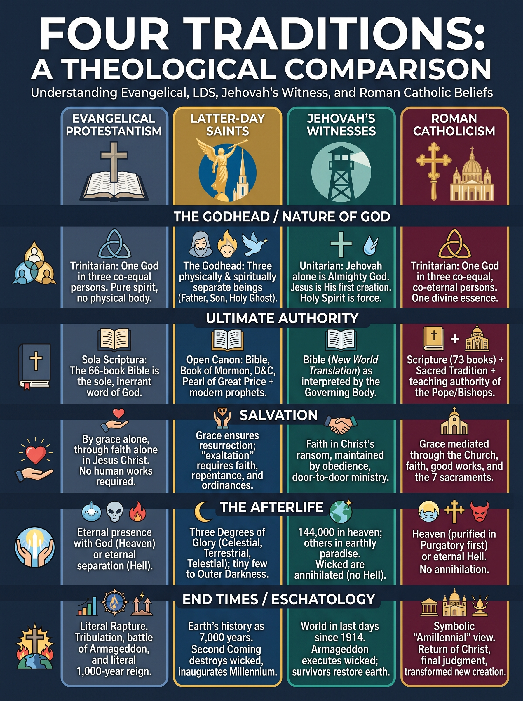

A Theological Comparison of Evangelical, LDS, Jehovah's Witness, and Roman Catholic Beliefs
The whole study on one page · ఒక్క చూపులో
“They received the word with all readiness of mind, and searched the scriptures daily, whether those things were so.” Acts 17:11
One God in three co-equal persons
Three separate beings; Father and Son have bodies
Jehovah alone is God; Jesus his first creation
One God in three co-equal, co-eternal persons
The 66-book Bible alone
Bible, Book of Mormon, D&C, Pearl of Great Price, prophets
The Bible (NWT) as interpreted by the Governing Body
Scripture, Sacred Tradition and the Magisterium
By grace alone, through faith alone
Grace for resurrection; exaltation needs faith, repentance, ordinances
Faith in Christ’s ransom, kept by obedience and ministry
Grace through the Church, faith, works and sacraments
Heaven with God or eternal separation
Three degrees of glory
144,000 in heaven, others on a paradise earth; the wicked annihilated
Heaven (after purification in Purgatory) or eternal Hell
Rapture, Tribulation, Armageddon, 1,000-year reign
Second Coming, then a 1,000-year Millennium
Armageddon, then a restored earth
Amillennial: return, final judgment, new creation

Click poster to enlarge